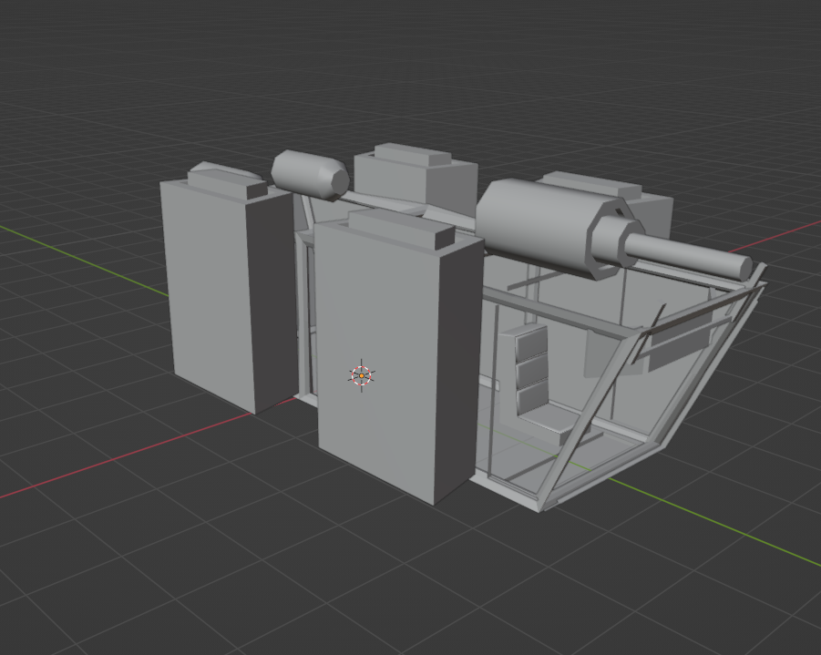
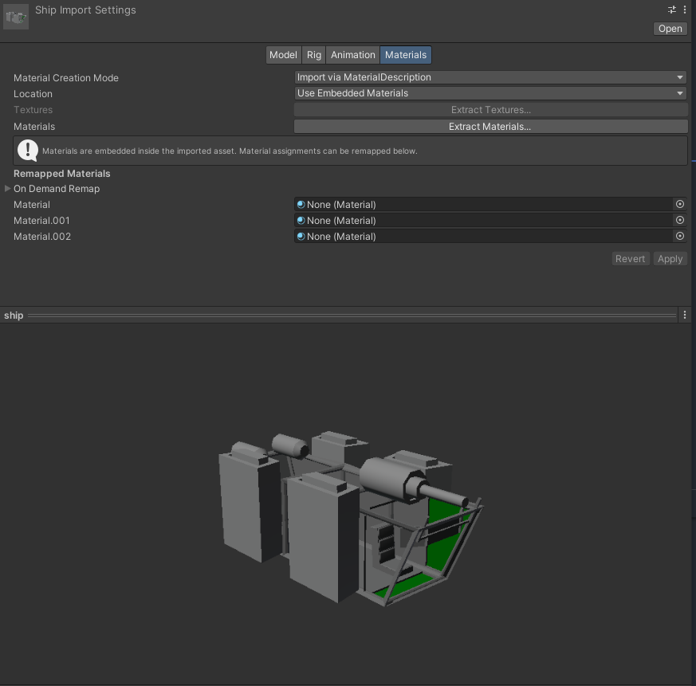
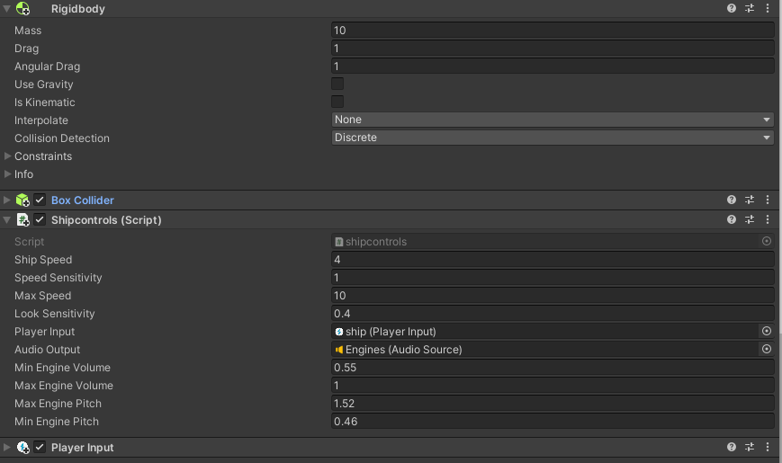
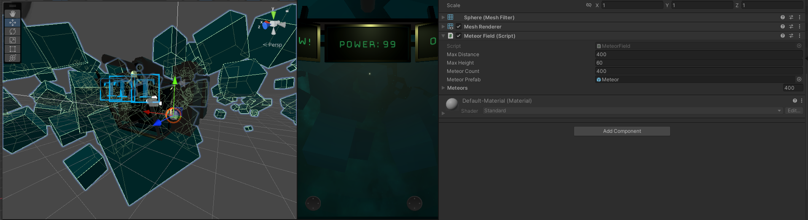
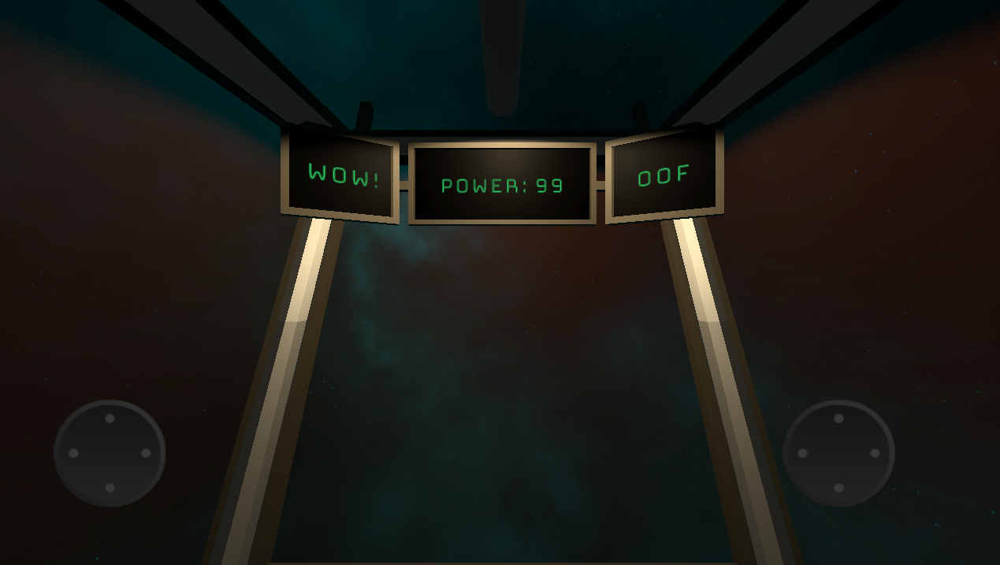

The first day I started by Creating a simple space ship in blender.

simple boxout of the ship with hero parts more detailed
Since I plan on having the ship walkable, I made sure to have it large enough for the player to walk around and inverted the normals so the collision mesh would work. In the future if I plan on being able to leave the ship I will make the outside. Or maybe I should do it anyways for promotional art.
The next part was exporting the ship as fbx, and assigning the materials to things such as the windows and screens. Since the game is still a prototype, I will not be doing any texturing in substance painter/armorpaint

importing the ship into unity
The next step was to write some simple movement code for the ship and slap a rigidbody on that badboy. I decided to not make the ship kinematic as the asteroids will be and I want the ship to be able to bounce off of them. I am also using a box collider as the calculations are easier for a mobile phone to handle compared to a full mesh collider. I also hopped into audacity and made a sound for the ship engines that will get effected by the velocity.magnitude of the ship

the inspector
Then for the asteroid spawning I made a simple script that will spawn the asteroids with a random rotation within a defined range. The spinning of the asteroids and the properties of their makeup are kept on the asteroid prefab. I am currently using basic cubes for the models while I work on the logic. After I am finished with the base game-loop I will then model some propper mobile-friendly asteroid models for each type of asteroid.

the inspector
That's all I have to share for week 1. Next I plan on adding basic mining an upgrade shop for more powerful lasers and maybe a save system so your progress will save.
after I have the basic game systems set up I will allow you to walk around your ship, and maybe even interact with some little fun things I sprinkle around ;)

UI added and tested on mid-quality android phone. So far gets a solid 45-60fps